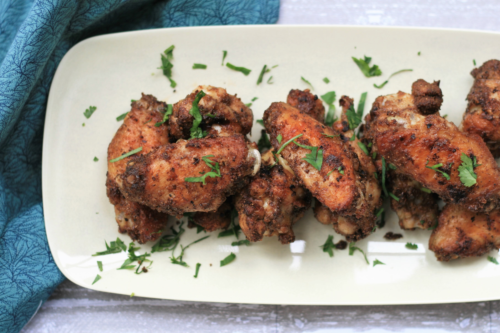

Description
Marinate chicken wings ahead of time in a simple homemade masala paste for an explosion of spicy Indian flavors.
Serve with lemon wedges and steamed basmati rice.
Ingredients
- 2 teaspoons ground coriander
- 2 teaspoons ground cumin
- ½ teaspoon ground cardamom
- ½ teaspoon hot chile powder
- ½ teaspoon ground black pepper
- ¼ teaspoon ground cloves
- 1 tablespoon vegetable oil
- 1 tablespoon water
- 1 teaspoon salt, or more as needed
- 5 large chicken wings, cut in 2, tips discarded
Steps
- Combine coriander, cumin, cardamom, chile powder, pepper, and cloves in a dry pan over low heat. Stir until
fragrant. Remove from heat, add oil and water, and stir until combined. Set spice paste aside.
- Rub salt over wings in a shallow dish, then rub spice paste all over. Cover and refrigerate, 4 hours to
overnight.
- Preheat an outdoor grill for high heat and lightly oil the grate. Add wings and cook, turning halfway, until
well browned, 15 to 20 minutes. An instant-read thermometer inserted near the bone should read 165 degrees F (74
degrees C).